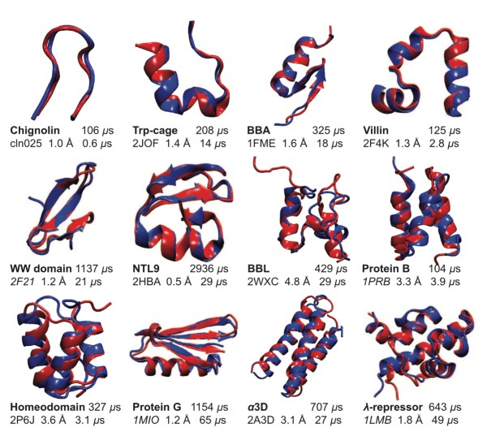

Proteins are significant both from a theoretical and practical point of view. On one side, proteins are involved in most biological processes, such as enzymatic catalysis, photosynthesis, and diseases. A fast and cheap method to determine how proteins
behave would help in many applications. The current experimental methods are both slow and expensive. Unfortunately, have trouble to determine the properties of proteins.
From a theoretical point of view, proteins are a challenge too. Proteins can have too many different possible shapes. This doesn't allow to predict the behavior of protein in a simple way. Only recently have powerful computers like Anton
allowed to fold small proteins by brute force approach. Brute force means that the protein is simulated exactly as it is in the real world. The achieve reasonable accuracy it takes months or years to simulate milliseconds of protein behavior.
Below in the figure is the size of some of the largest proteins which could be folded on a computer, with around a millisecond simulation time. Most proteins don't fold in this short time since they are larger. Only for fast-folding proteins,
the whole protein behavior can be simulated. Simulating protein behavior on this short timescales not only improved our understanding of proteins and biology but allowed to improve the design of new drugs. Still, most biological processes have
longer timescales and are out of reach with these methods. More about my research into new methods to reach longer timescales in the Papers section.

Results from Anton supercomputer, folding of several small proteins. How fast-folding proteins fold, Shaw et al., Science, 2011
Publications
longer description under Section Papers
[1] Extensible and Scalable Adaptive Sampling on Supercomputers. E. Hruska et al., 2019, https://arxiv.org/abs/1907.06954
[2] Quantitative Comparison of Adaptive Sampling Methods for Protein Dynamics, E. Hruska et al., J.
Chem. Phys. 2018, https://doi.org/10.1063/1.5053582
[3] ExTASY: Scalable and Flexible Coupling of MD Simulations and Advanced Sampling Techniques, V.
Balasubramanian et al. including E. Hruska , 2017, Proceedings of the 2016 IEEE 12th International
Conference on e-Science, e-Science, 361–370, https://doi.org/10.1109/eScience.2016.7870921